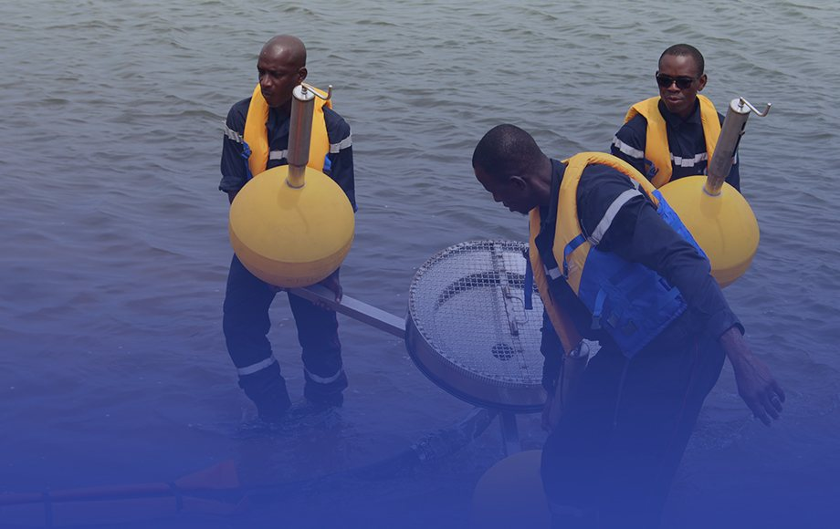
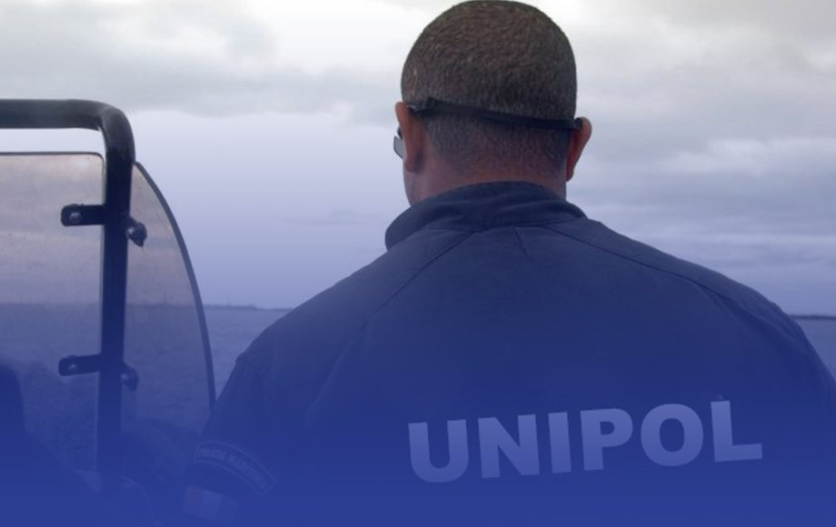

Cinq sous-directions, une chaîne de contrôle
Mesurer, surveiller, intervenir, constater, réhabiliter : chaque structure du CIAPOL couvre un maillon précis de la protection des milieux récepteurs.

Laboratoire Central de l’Environnement
Créé en 1985 sous la commission nationale de l’environnement, animé par du personnel de la Marine nationale, le LCE devient une sous-direction du CIAPOL en 1991. Il suit, contrôle et fait connaître la qualité de l’environnement.

Compagnie d’Intervention contre les Pollutions Marines et Lagunaires
Née après la catastrophe de l’Amoco Cadiz, la CIPOMAR est l’unité opérationnelle chargée de la prévention et de la lutte contre les pollutions marines et lagunaires. Elle met en œuvre le plan d’urgence POLLUMAR sur 500 km de côtes et 300 km de lagunes.

Inspection des Installations Classées
Tout procédé de fabrication engendre des rejets liquides, gazeux ou solides qui, mal maîtrisés, peuvent avoir des conséquences graves. La SDIIC assure la mise en œuvre des mesures de protection dans les installations classées.

Unité de Police Antipollution
Conformément à la loi n°96-766 du 3 septembre 1996 portant code de l’environnement, l’UNIPOL recherche, constate et réprime les infractions à la législation sur la pollution des milieux récepteurs : l’air, l’eau et le sol.

Gestion des Sites Pollués & Végétaux Aquatiques Envahissants
La sous-direction assure la gestion des sites pollués et des plans d’eau envahis par les végétaux aquatiques envahissants, et conduit les opérations de dépollution et de réhabilitation.